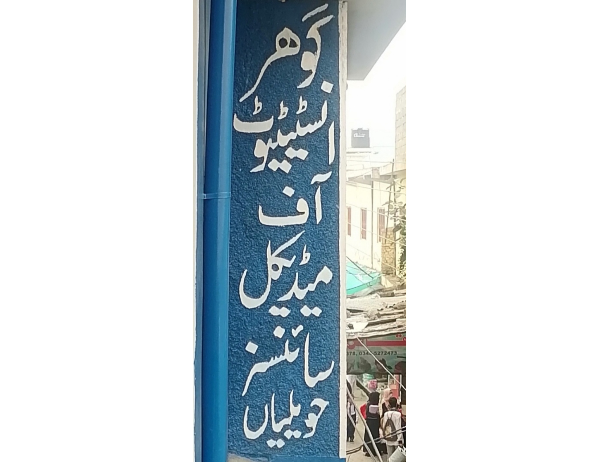

Our Campus
Gohar Institute of Medical Sciences,Havellian


GIMS

GIMS


Paramedical courses are job oriented and present ample employment opportunities. These courses are quite training specific and train the students for real life medical situations. The significance of paramedical courses has been realised by the increasing need for skilled paramedics in the medical field, without paramedics the medical field would be crippled
Visit Us To Know MoreGohar Institute Of Medical Sciences offers a wide range of para-medical/diploma programs.
Eligibility Matric with Science ( Biology ) 50% Marks
Eligibility: Matric with Science ( Biology ) 50% Marks
Eligibility: Matric with Science ( Biology ) 50% Marks
Eligibility: Matric with Science ( Biology ) 50% Marks
Eligibility: Matric with Science ( Biology ) 50% Marks
Eligibility: Matric with Science ( Biology ) 50% Marks
Gohar Institute of Medical Sciences,Havellian
Gohar Institute Of Medical Sciences provides a wide range of facilities to it's students to enhace their skills to the best of their abilities.

College library stimulates the students to obtain, evaluate and recognize knowledge and to familiarize themselves with the trends of knowledge for further education and learning new disciplines.

Students, faculty and staff have access to the computer labs, which provide the tools and technologies to produce websites, edit papers, complete class assignments, communicate via email, conduct data analyses and access library resources.

Laboratory experiences provide opportunities for students to interact directly with the material world (or with data drawn from the material world), using the tools, data collection techniques, models, and theories of science.